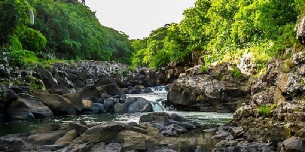
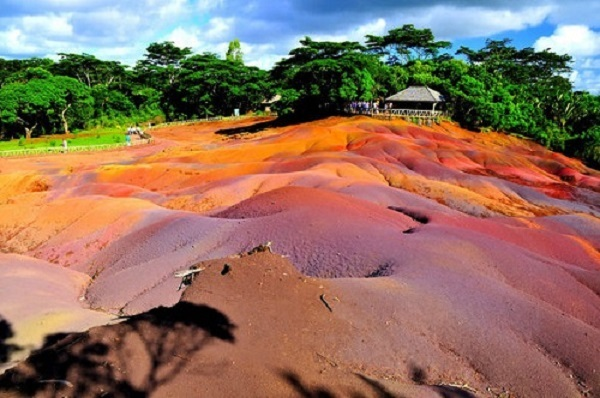

Black River Gorges
Black River Gorges National Park is a national park in the hilly south-western part of Mauritius.The Black River Gorges is worth visiting for all trekkers, as well as for the pure nature lovers and bird-watchers.
The Black River Gorges is the largest national park in Mauritius. Famous for its waterfalls, vistas and hiking, the gorge is in the central highlands, making it cooler than much of the island. It harbors about 311 species of native and endemic flowering plants and 9 species of birds, which are found only in Mauritius.
Chamarel
The seven colored earth is a natural phenomenon and a prominent tourist attraction. The colors evolved through conversion of basaltic lava to clay minerals.
It is a relatively small area ofsand dunes comprising sand of seven distinct colours (approximately red, brown, violet, green, blue, purple and yellow).Due to the tropical weather conditions, all water-soluble elements such as silicon dioxide have been washed out. The remains are the reddish-black iron- and aluminium oxides which create shades in blue, cyan and purple. The various colors developed due to the different compositions. And what is more fascinating is the fact that if you mix the colored earth together, they'll eventually settle into separate layers
La Roche Qui Pleure
At Gris-Gris, the profile of the poet Robert Edward Hart was carved by waves and the wind on the side of a promontory called "La Roche qui pleure" (the crying rock). Get close to the waves blowing up between the cliffs and breathe in the breeze that comes straight from Antarctica.
Rochester Falls

The Rochester Falls out of Souillac are worth a visit. The road passes through the sugar refinery of Terracine. Over time, curious carvings have appeared in the lava shaped by the waters and green crystals were formed in the soil.The Waterfall is 10 meter (33 feet).
Casela-Safari, Animals and Wildlife Activities

The Casela World of Adventures is spread over an area of 250 hectares of rugged terrain, lush forest, scorched-earth safari and breath-taking gorges in the mountain area.
The park is divided in four thematic units (kingdoms) plus a Discovery Centre:
* Safari Kingdom: Safari Quad Biking, photo-safari, dedicated area for big cats and suitable for safari and interaction with giraffes.
* Nature Kingdom: Bird Park, Canopy Park, Animal show.
* Mountain Kingdom: Canyoning, Via Ferrata, zip lines, climbing wall.
* Discovery Centre: 4D cinema, discovery of natural science and history of Mauritius through giant 3D Maps.
Book Now
La Vanille Nature Park
The Vanilla Nature Park is a park covering a surface of five hectares in the south of Mauritius, close to the village of Rivière des Anguilles.
Set in a tropical forest, in the midst of exotic fauna and flora, the park comprises of a large number of crocodiles grouped according to age and species in secured enclosures. La Vanille Crocodile Park also showcases a diverse range of animal species, including giant tortoises in an open enclosure, iguanas, deer, and wild pigs, amongst others.
You can also learn more about various insects and colourful butterflies at the park’s Insectarium that hosts one of the largest collections of insects in the world; a 30-year-old collection by Jacques Siedleck of over 20,000 species of insects and butterflies originating from all five continents
Book Now
Pond Naturel
Pont Naturel (Natural Bridge) is exactly what the name says. It's a volcanic rock formation (2 meters or 6.5 feet long) that looks like a man-made bridge yet it is formed by natural processes. It's a part of the cliff at Gris-Gris. If you are brave enough, you can try to cross it, you will see the waves hitting the rocks underneath and sometimes passing over the bridge. This spot is another amazing point for great photographs, you just need to be patient while waiting for the waves to come. On the surface, there are many little holes through which sea water goes making whistling sounds. That's why this place is also called "le soufler" which means "a blower".
Le Monde Brabant
The beach of Le Morne is literally at the South West's edge of the island, providing a great bay scenery and view on the Morne Brabant hill. Its remote location makes it a quiet and safe choice for relaxing. Also, the strong currents and winds make it a first choice beach for kitesurfing and other watersports activities.
Blue Bay Marine Park
By some estimates over 40 different types of coral are found in these shallow, turquoise waters, which also house up to 70 species of colorful, tropical fish. With an average depth of only 10 to 20 feet, Blue Bay Marine Park is easily accessible to snorkelers and casual swimmers, most of whom are immersed in fish the moment they jump off the boat.
Book Now
Flic en Flac
Flic en Flac is very popular destination which attracts both tourists and locals Mauritians.
Flic en Flac is a great place to spend your holiday where one will find excellent beaches, range of waterspouts and a quiet setting for complete relaxation. It offers pleasant and charming setting with beautiful white sand beaches and beautiful blue lagoons. Along its very long beach there are many restaurants, hotels, shops and centers.
All can enjoy the 8 km long beach for great afternoon walks, water sports, sun bathing or for relaxation. Also, the beach is ideal place to have picnic, while staying in the shadow of the trees scattered along the coastline.
The Flic en Flac beach, fringed with Casurina Trees, has a fine lagoon protected by the reef, where swimming is safe and various water sports can be enjoyed.
Sept Cascade
Sept Cascade, hidden in a verdant valley between Curepipe and Black River Gorges, 7 cascades (7 waterfalls), is well known for its panoramic views and amazing hiking experience. It is a famous attraction in Mauritius among both Mauritians and tourists.
Curious Corner
Curious Corner is a house of fun packed illusions with adventures to be enjoyed with friends and families which are set out for your entertainment or even frustration. It is a fascinating, fun and social excursion into the wonderful world of optical illusions, which will leave you quite literally, not believing your eyes!
Curious corner consists of a
-Mirror Maze
-The Ames room
-The upside down room
-The Laser music room
Book Now
Maconde

The region is well known for its natural beauty and its wild, rugged coastlines. With the picturesque land and seascapes, encompassing the red-coloured earth, the deep green forest, the lines of palm trees, and the sparkling blue sea by the side- you will have an incredible journey to the viewpoint, Maconde. It is set on a curved portion of the coastal road, on the peak of a small rocky cliff where you can enjoy breathtaking views of the Indian Ocean.